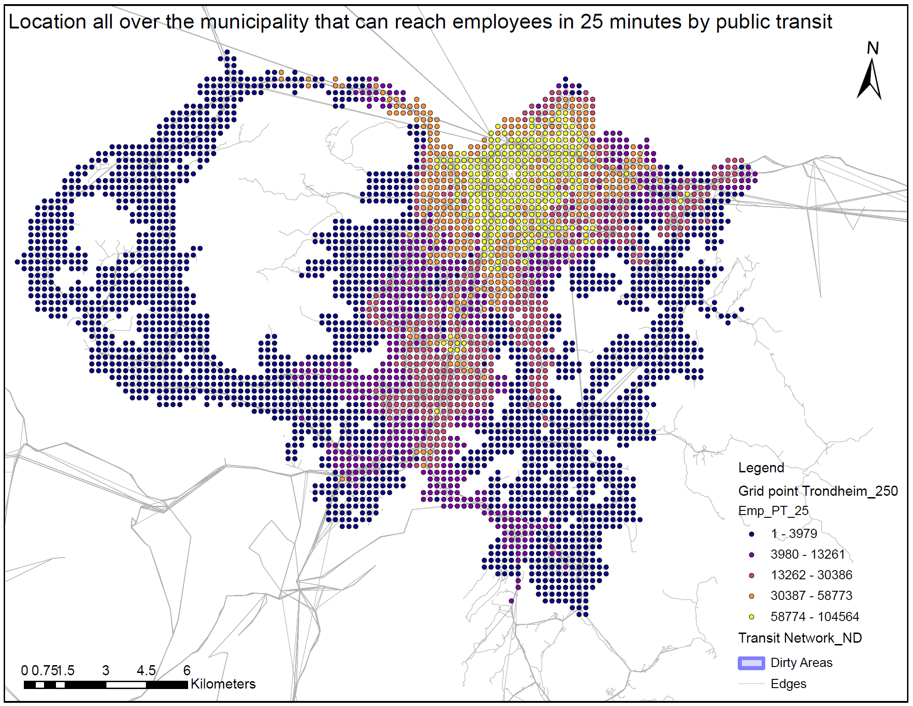

For this case, the public transit network, GridpointTrondheim_250, Employees_100grid, and OD-cost matrix analysis were used to delineate the population grid points that can reach employees within 25 minutes by public transit during morning rush hour. [cite: 1344]
GridpointTrondheim_250 within the 300 m search tolerance was imported to the origin point by creating a field named ABC_ID in the attribute table of the origin. The grid points were mapped to the origin using ABC_ID. Employees_100 grid also imported into destination in the OD-cost matrix within 300 m search tolerance.
Then the OD-cost matrix analysis is run using the OD-cost matrix on March 29, 2023, at 7:30 AM, with the public transit time set as a cost impedance. Then the results of total public transit time, total walking time, and total length were calculated and added to the line feature under the OD-cost matrix. Then the line feature data is joined with destination using destination ID as the input join field and object ID as the join table field. In the joining process, the input table has 629573 records, and the join table has 2533 records. One to one match 629573 records. Then the sum of employees summarized from the line feature based on origin ID Then the line statistic table, which summarizes the data of employees joined with origins using origin ID as the input join field and object ID as the join table field, In the joining process, the input table has 3810 records, and the join table has 6352 records. A one-to-one has 3810 records.
It means 3810 grid points have access to employees within 25 minutes. From the results, it is shown that 3810 employees’ grid and a maximum of 104564 employees can be reached within the specified period. Most of the employees are located in the city center, as shown on the map.